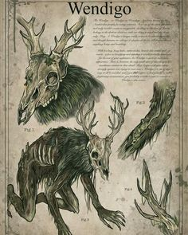

Wendingo

Os Wendigos são descritos como criaturas tenebrosas, maléficas e irracionais. Um Wendigo pode ser eclodido quando um humano decide praticar canibalismo durante o inverno, porém, quando se trata de seu desenvolvimento, há variantes: Algumas histórias sugerem que o humano naturalmente virá a se tornar um Wendigo conforme for praticando o canibalismo, outras sugerem que ao praticar o canibalismo, o humano será incorporado pelo espírito maligno do Wendigo que irá torna-lo em uma criatura irracional sedenta de carne humana.
